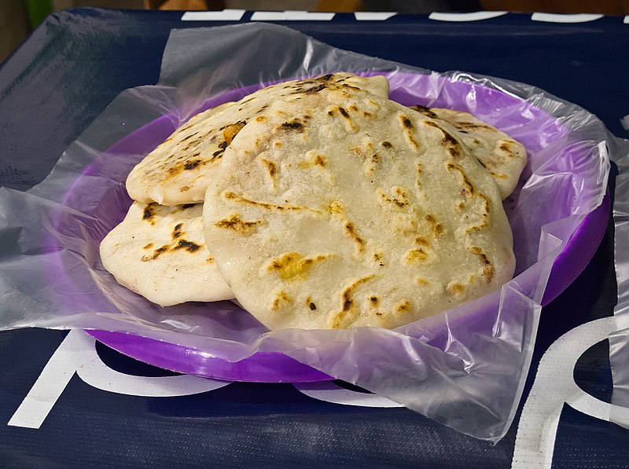
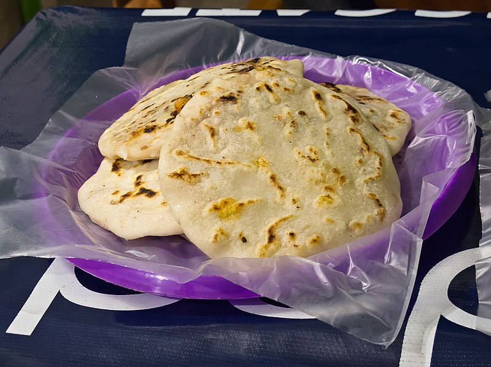

Las imagenes.
 
 Mi querido El Salvador.
Un pais lleno de tanta alegria, sus calles muestran su resplandor, sus rios corren con tanta dulzura, ha bisando su delicadeza a lo desconocido los cerros y las montañas muestra su humildad antes los ojos de las personas. miráis que lugar tan encantador su paisaje, su nobleza un país de pobreza y riqueza que conviven en uno solo.
OHH El Salvador.
El himno creado con valor mas su credo con mucho fervor El Salvador un lugar que me vio crecer, por ser el pulgarcito de latinoamerica del occidente Causo mucho temor, mas bien el temor a no volver a ver su belleza.
Poemas para El Salvador.
El Nido.
“Es porque un pajarito de la montaña ha hecho, en el hueco de un árbol, su nido matinal, que el árbol amanece con música en el pecho, como que si tuviera corazón musical”.
EntrarAscensión
“¡Dos alas!… ¿Quién tuviera dos alas para el vuelo? Esta tarde, en la cumbre, casi las he tenido. Desde aquí veo el mar, tan azul, tan dormido, que si no fuera un mar, ¡Bien sería otro cielo!…”
EntrarUn rancho y un lucero.
“Un día ¡primero Dios! has de quererme un poquito. Yo levantaré el ranchito en que vivamos los dos”.
EntrarPensamientos de El Salvador.
Árbol de Fuego.
“Son tan vivos los rubores de tus flores, raro amigo, que yo a tus flores les digo: “Corazones hechos flores”.
EntrarLos ojos de los bueyes.
“¡Los he visto tan tristes, que me cuesta pensar cómo siendo tan tristes, nunca puedan llorar!… Y siempre son así: ya sea que la tarde los bese con sus besos de suaves arreboles, o que la noche clara los mire con sus soles, o que la fronda alegre con su sombra los guarde…”
EntrarPrimavera.
“¡Los he visto tan tristes, que me cuesta pensar cómo siendo tan tristes, nunca puedan llorar!… Y siempre son así: ya sea que la tarde los bese con sus besos de suaves arreboles, o que la noche clara los mire con sus soles, o que la fronda alegre con su sombra los guarde…”
EntrarEl Salvador será
El Salvador será un lindo y (sin exagerar) serio país cuando la clase obrera y el campesinado lo fertilicen lo peinen lo tal que en le curen la goma histórica lo adecenten lo reconstituyan y lo echen a andar.
EntrarEl alma nacional
El problema es que hoy El Salvador tiene como mil puyas y cien mil desniveles quinimil callos y algunas postemillas cánceres cáscaras caspas shuquedades llagas fracturas tembladeras tufos.
EntrarLa violencia aquí
En El Salvador la violencia no será tan solo la partera de la Historia. Será también la mamá del niño-pueblo, para decirlo con una figura apartada por completo de todo paternalismo.
Entrar
Ropa tipica
Los trajes típicos de El Salvador, conocidos también como trajes nacionales, son los que expresan la identidad cultural de esta nación centroamericana.
EntrarHomenaje a mi Padre.
Una vez más la patria que duele dentro de mí y me sufre Porque así soy Tal vez sería otro más locuaz perseverante y genial Pero confundido de mí encuentro que no soy lo que pude ser si hubiese nacido un momento de mayor felicidad de dicha suprema cuando lloviera menos de lo que llueve ahora sobre San Salvador
EntrarTamales salvadoreño.
Los tamales salvadoreños es parte de la cocina tradicional. A base de maíz. Entrar
Salpicon
Salpicón de Res es un delicioso platillo típico de El Salvador, no engorda, y brinda una gran cantidad de minerales y vitaminas.
EntrarMusica salvadoreña.
La música tradicional salvadoreña —que para el caso es interpretada en sus danzas.
Entrar“El sombrero azul”.
Poco tiempo después de que la población salvadoreña sufriera los estragos de los terremotos de 2001, el grupo Salsa Clave creó una adaptación del tema original del venezolano Alí Primera. “La inspiración fue de William Cenna, quien hizo el arreglo (…) doña Betty de Cenna y yo hicimos un cambio adecuado en la letra, acorde con la situación que estaba viviendo el país, con el objetivo de impulsar la reconstrucción de El Salvador”, detalló la cantante Ligia Morales, quien impregnó su voz y estilo a este éxito que surge cada vez que el territorio cuscatleco está pasando por momentos difíciles, como en la actualidad.
Entrar“Bendita tierra”.
En 2018, Arquímedes Reyes integró a la lista de himnos a El Salvador esta producción que surgió con el objetivo de mostrar al mundo las bellezas naturales de El Salvador; en el video aparecen sitios como el Centro Histórico, el volcán de San Salvador, el lago de Coatepeque y Tazumal, entre otros. “Desde hace varios años quería hacer algo que tuviera que ver con mi país (…) El resultado es una canción folk pop. Al final no dejo de cantar pop, pero buscamos una línea melódica que fuera sencilla, muy natural”, declaró el artista a El Diario de Hoy en la temporada del lanzamiento de “Bendita tierra”, que en YouTube sobrepasa las 150,000 vistas.
Entrar“El Salvador es mi tierra”.
Definitivamente la salsa es uno de los géneros preferidos en El Salvador, es por esta razón que la producción se convirtió en un hit gracias a los salvadoreños dentro y fuera del país. La letra y música son originales de Rubén Flamenco, director y fundador de Salsalvador All Stars. “La compuse hace 20 años cuando estaba en la ciudad de Nueva York, donde vivía solo y extrañaba mucho, por supuesto, el país, a las personas que uno ama (…) Ahí nació la idea de ‘El Salvador es mi tierra’, posteriormente se grabó en 2008 con la orquesta”, comentó Flamenco.
Entrar